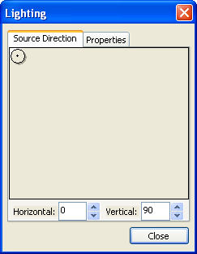
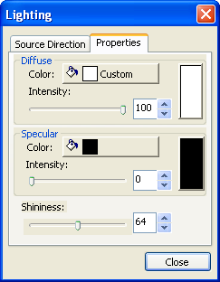

Der Dialog Beleuchtungssteuerung ist eine Ergänzung zur Registerkarte Beleuchtung. Um diesen Dialog aufzurufen, aktivieren Sie ein 3D-OpenGL-Diagramm und klicken Sie auf die Schaltfläche Beleuchtungssteuerung
Der Dialog Beleuchtungssteuerung ist eine Ergänzung zur Registerkarte Beleuchtung. Um diesen Dialog aufzurufen, aktivieren Sie ein 3D-OpenGL-Diagramm und klicken Sie auf die Schaltfläche Beleuchtungssteuerung  auf der Symbolleiste Stil.
auf der Symbolleiste Stil.
Inhalt |

Um die Richtung der Lichtquelle zu steuern, müssen Sie:
Auf die Schaltfläche der grafischen Steuerung klicken und Sie nach Belieben verschieben.
oder
Die Winkelzahl der horizontalen und vertikalen Richtung eingeben.
Die Standardposition der Lichtquelle ist 0 für horizontal und 90 für vertikal.
Der mögliche Bereich der Lichtquelle liegt zwischen 0 und 360 für horizontal und 90 bis -90 für vertikal.
Ein horizontaler Winkel, der gleich 0 ist, ist äquivalent zu dem Winkel, der gleich 360 ist.

Um den Effekt des diffusen Lichts zu ändern, können Sie
Eine Vorschau mit der Kombination von Farbe und Intensität wird auf der rechten Seite gleichzeitig mit der Änderung der Einstellungen gezeigt. Außerdem wird der Effekt im Originaldiagramm in Echtzeit gezeigt.
Die Standardfarbe ist Weiß und die Standardintensität ist 100.
Um den Effekt des Spiegellichts zu ändern, können Sie
Die Standardwerte der Lichtfarbe ist Schwarz, der Intensität 0 und des Glanzes 64.